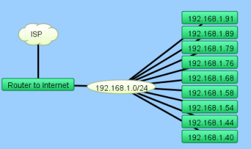
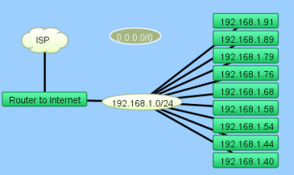
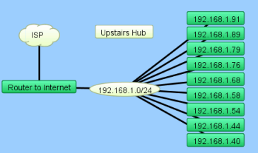
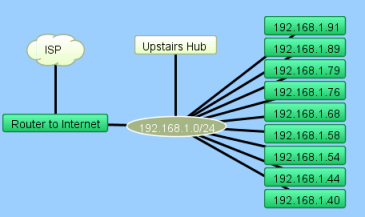
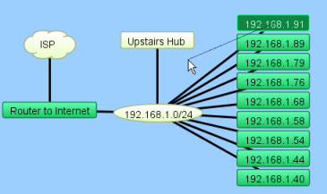
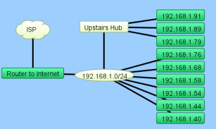

InterMapper cannot automatically discover or monitor unmanaged switches and hubs (so-called 'dumb' devices) since they have no IP address. However, there is a workaround that allows you to represent them on an InterMapper map.
To do this, you can create a placeholder icon, and then manually drag the links from the appropriate devices to this new icon. Although InterMapper cannot test or monitor this "fake" equipment, it will appear on the map and display the interconnections of your network as a tool to diagnose problems.
Here is a step-by-step description of the process. Note that this description works equally well for either switches or hubs.
In the starting map, notice that InterMapper has automatically connected a number of devices to the network oval labeled "192.168.1.0/24". We happen to know that the top three devices --IP addresses 192.168.1.91, .89, and .79-- are in fact, connected to a dumb (e.g., unmanaged) hub on the floor above. This page shows how to create a placeholder icon to represent the hub and connect those three devices to it.
|  |
The problemThe top three devices - IP addresses 192.168.1.91, .89, and .79 - are in fact, connected to a dumb (e.g., unmanaged) hub upstairs. We want to create a placeholder icon that represents the hub, and then move the connections for those devices to the placeholder. |
|  |
Step 1: Create a placeholder to represent your hubThe first step is to create a new (empty) network. To create the new network:
|
|  |
Step 2: Tidy upTidy up the appearance of the item: |
|  |
Step 3: Connect the hub to the networkConnect this new rectangle to the oval below. To connect the "hub" to the network:
A line appears, connecting the two items together. This line persists as you move the items around your map. |
|  |
Step 4: Connect the devices to the "hub"Drag each of the links for the three devices from the oval to the new rectangle. To connect the devices to the "hub":
The line "sticks" to the new rectangle. Do this for all three links. |
|  |
The resultYour map should look like this after dragging the three links from the oval to the "fake" hub. |